Companion to the SUPERMILLS Investor OverviewSeptember 2026
Data centers are among the fastest-growing buyers of structural steel. Customers report backlogs and shortages, and Microsoft and Meta already build data-center structures in mass timber.
Mass timber replaces concrete floors. SUPERWOOD, stronger than A36 steel in tension at one-sixth the weight, adds the steel: members, skins and screens — and strengthens the mass timber itself. It ships today from SuperMill One; truss design and mass-timber enhancement are under way.
A gigawatt data center's skins alone are one to three years of SuperMill One's output; its structure is a year or more of SuperMill Two. Long term: prefabricated envelopes and, eventually, foundations.
The company, team, mills, cost roadmap and the raise are in the SUPERMILLS Investor Overview. This deck covers one application. Strength: company test data vs ASTM A36; data center sizing: company estimate (slides 5–6).
JLL, midyear 2026 — more electricity than Germany uses. At the published 50–100 tons of structural steel per MW, that pipeline alone is 3.3–6.6 million tons of structural steel.
McKinsey: 82 GW in 2025 to about 219 GW in 2030, AI workloads driving 71% of the growth. JLL: 103 GW to 200 GW.
Dell'Oro: up 57% in 2025, above $1 trillion in 2026, $1.7 trillion by 2030 — mostly servers and chips; the buildings are the Census share on the left.
500–1,000 tons of structural steel and 5,000–10,000 m³ of concrete per 10 MW.
Customers report backlogs and a shortage of structural steel; supply chain and timeline are their first concern.
Hyperscalers build to a standard basis of design, one data center after another.
US Census Bureau, Construction Spending (C30), private data center construction put in place: July 2026 preliminary seasonally adjusted annual rate $75.2B vs $47.8B in July 2025 (+57%); bars are calendar-year totals, not seasonally adjusted; buildings only, servers excluded. JLL North America Data Center Report Midyear 2026 (66 GW). McKinsey, AI power (2025). JLL Global Data Center Outlook 2026. Dell'Oro Group (2026). Steel intensity: arXiv 2509.21312, secondary; tonnage derived. Shortage statements are what customers report to InventWood.
Windowless boxes on farmland. Counties answer with 500–1,000 ft setbacks and design standards. SUPERWOOD: facades, fences and screens that read as architecture.
Fan walls, chillers and generator tests hum past the fence line. Ordinances now set decibel limits at the property line. SUPERWOOD: acoustic screens and barriers; potentially sound-damping ductwork and fan enclosures at the source.
Into the structure of the buildings and what is inside them: trusses, floors, enclosures, racks. Wood is already emerging in data center structures. Power, water and rates are outside our scope.
January to March 2026, as much as in all of 2025. 833 opposition groups in 49 states.
Henry County, Virginia: 1,000 ft setbacks, 50 dBA at the property line. Virginia's 500 ft setback is becoming the reference.
Data Center Watch, Q1 2026 report (June 2026). Virginia HB 153; Henry County, VA ordinance, Aug 2026. Electricity rates and water are the other leading objections; SUPERWOOD does not address them.
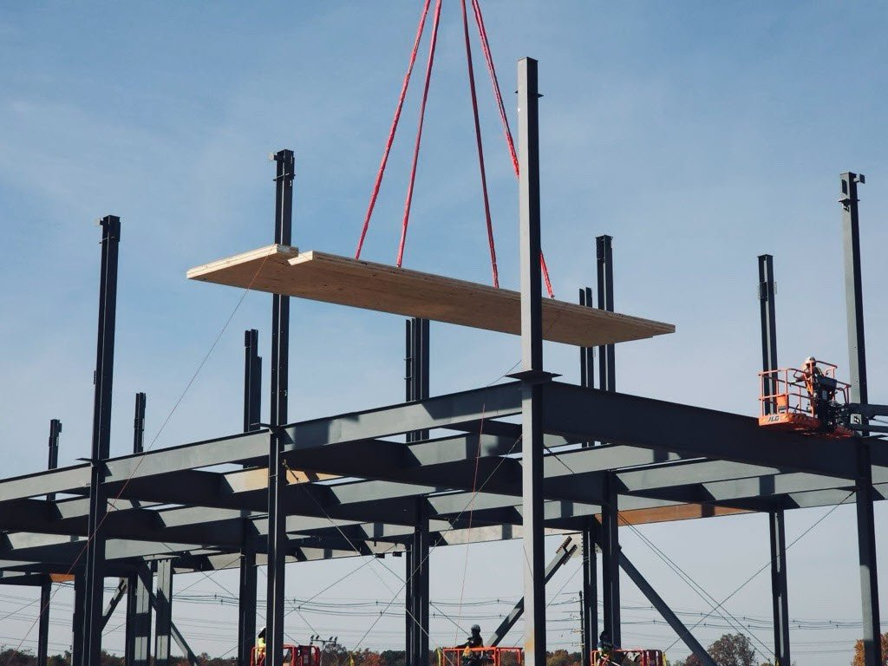
Two Northern Virginia datacenters with cross-laminated timber floors on a steel frame — about 35% less embodied carbon than conventional steel construction, 65% less than precast. Gensler; Thornton Tomasetti.
Microsoft Source, Nov 2024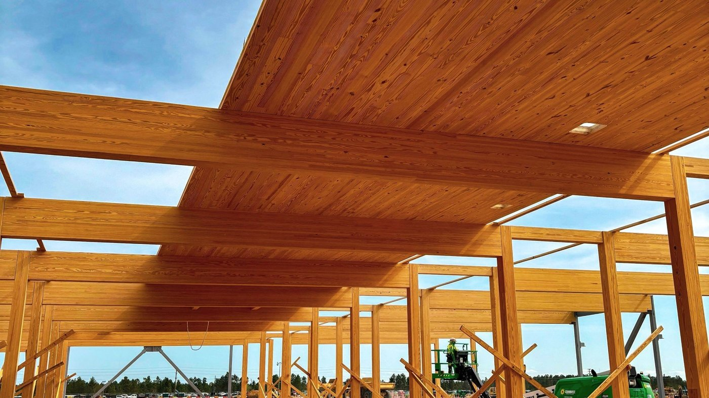
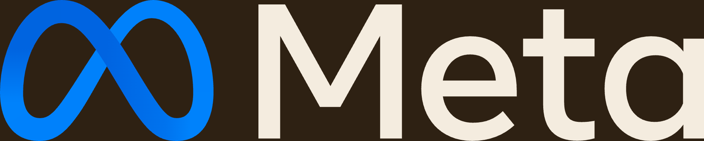
Mass-timber data-center administrative buildings: Aiken, South Carolina completed 2025 (DPR, SmartLam); Cheyenne and Montgomery under way; about 41% less embodied carbon in the materials substituted.
Meta Sustainability, 31 Jul 2025| Mass timber today (CLT, glulam) 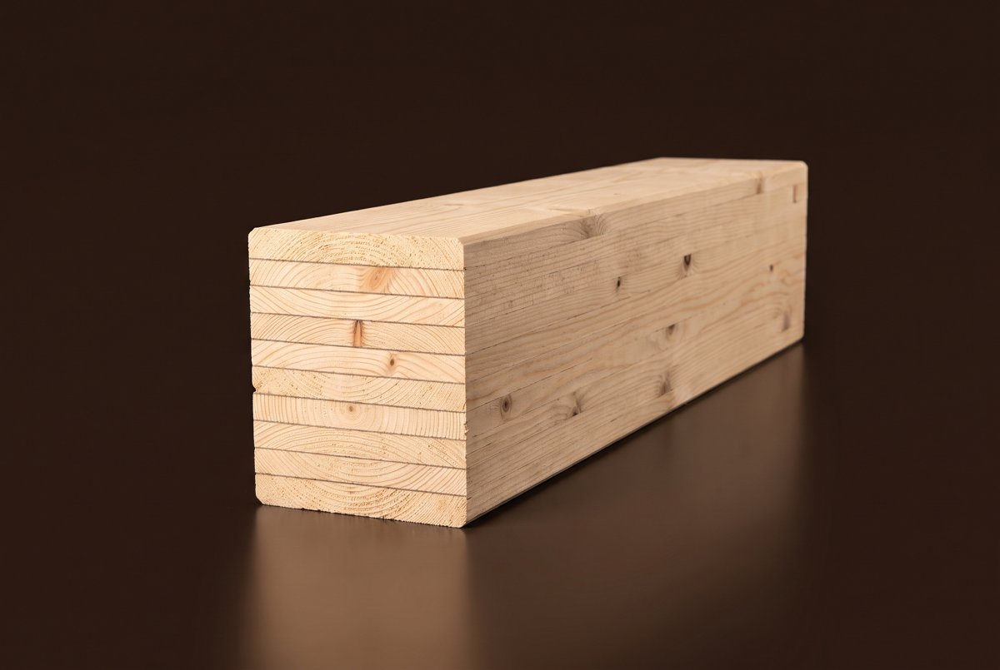 | With SUPERWOOD 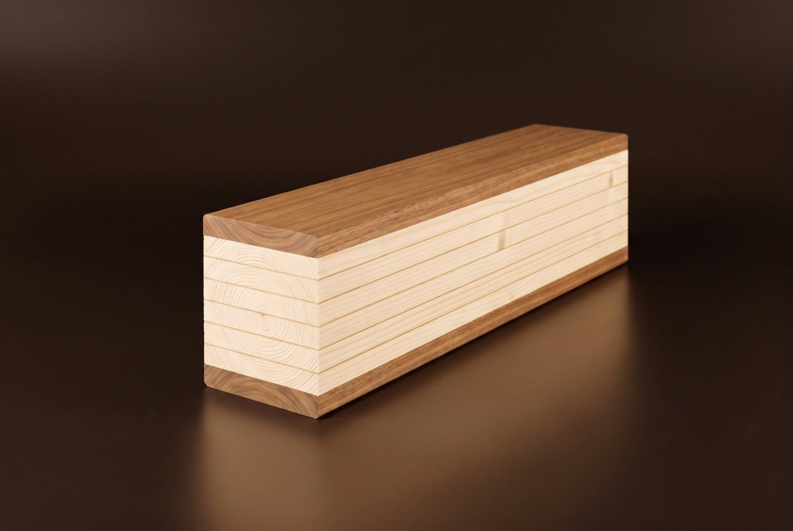 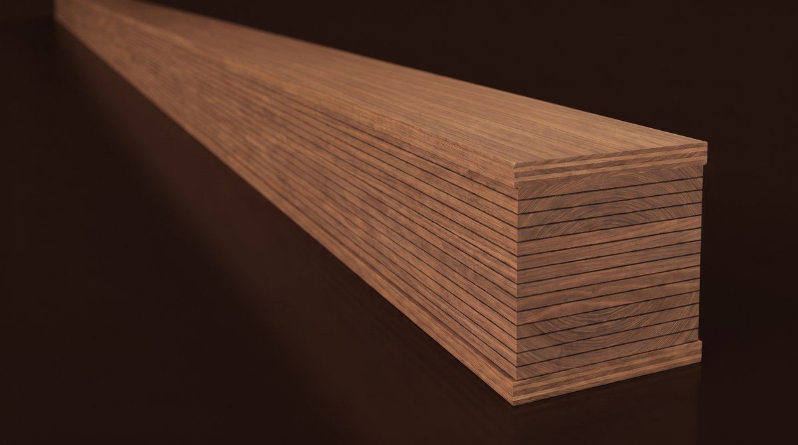 | |
|---|---|---|
| What it replaces | Concrete floor slabs and decks; some columns and beams | Adds the steel: members, skins, screens and fences; later, enclosures and foundations |
| Strength | Lumber-grade; large sections carry the load | Tensile strength above ASTM A36 steel in samples, at one-sixth the weight; thin, dense members |
| Enhancing mass timber | Glulam and CLT at lumber stiffness | Mass-timber enhancement: SUPERWOOD outer laminations (~10% of section) raise a glulam beam's stiffness ~75% and strength ~100% |
| Exterior use | Needs protection from weather | Exterior grade; resists moisture, pests and rot |
| Fire | Chars; established assemblies | Chars; far better than ordinary wood — Class A demonstrated in testing |
| Code path | Established in the building codes | Certifiable under wood standards today; SUPERWOOD-specific standards are the goal |
Sources: news.microsoft.com, Nov 2024; Thornton Tomasetti project page; sustainability.atmeta.com, 31 Jul 2025. Logos and photographs are the companies' own, from the cited publications, used to identify the published projects. SUPERWOOD strength: company test data, parallel-to-grain tension. Hybrid-beam gains: derived from beam theory with SUPERWOOD modulus and strength, engineering write-up pending. Beams: concept renderings.
Structure, envelope and contents — frame, roof, skins, platforms, racks, enclosures, equipment. Skins, screens and fences now; racks, platforms and barriers next (racks are a few months of development away); frame and roofs as structure; server enclosures eventually; never the electronics.
At the global-average steel factor; about a third with recycled steel. The steel above the slab alone carries roughly 37% of the building materials' embodied carbon — the share SUPERWOOD addresses in the immediate, soon and medium-term horizons.
Company estimate for a 1 GW IT-load data center, high case. Only the concrete and structural-steel intensities are published (arXiv 2509.21312, a secondary source); other rows are estimates from unit masses. Carbon factors: steel 1.8 kg CO₂e/kg (global average; recycled 0.4–0.7), concrete 0.12; equipment embodied carbon not estimated. Steel share: company estimate; the 50–80% band covers metal-panel and tilt-up concrete wall designs. Horizons: immediate = shipping; soon = 1–3 years, straightforward applications engineering; medium term = complex applications engineering, new form factors or materials engineering; long term = 5+ years, technical potential with no design or code pathway yet.
SUPERWOOD a 1 GW data center could require, by horizon, against what each mill makes in a year.
| Horizon | SUPERWOOD required | Years of mill output · bar scale 0–12 years, tick at one year |
|---|---|---|
| Immediate — skins, screens, fences | 1,200–2,700 tons (1.4–3.1M sf) | 1.4–3.1 years of SuperMill One |
| Soon — racks, platforms, barriers | 3,500–18,000 tons | 0.1–0.6 years of SuperMill Two |
| Medium term — frame, roofs, enclosures | 16,000–65,000 tons | 0.5–2.1 years of SuperMill Two |
| Long term — slab, foundations | 58,000–362,000 tons | 1.8–12 years of SuperMill Two |
Company estimate from the slide 6 model, low–high scenarios; 0.3–0.6 substitution factor for steel, to be engineering-stamped per element; long-term row also includes server enclosures at 40% of IT mass (a small share of the total), electronics excluded. Mill output at 0.87 kg/sf, 1.3 t/m³. Pricing is set per application; see the SUPERMILLS Investor Overview.
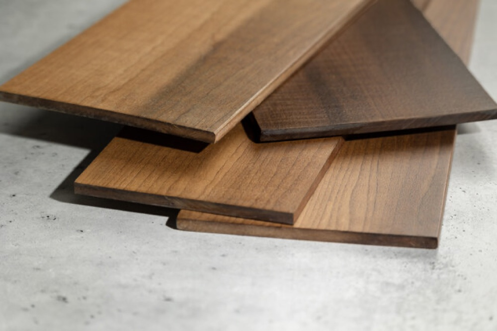
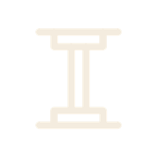
Able to carry the required loads — tensile strength above ASTM A36 steel in production samples
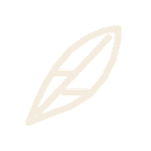
One-sixth the weight of steel: faster and safer to transport and install, and reduced structural requirements
The texture, colors and warmth of wood — the biophilic, community-facing surface
Harder and more dent-resistant than oak; impact and storm resistant; exterior grade resists moisture, pests and rot
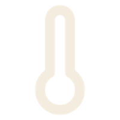
Thermal and electrical insulator — no thermal bridging, and non-conductive around electrical infrastructure
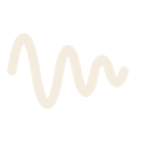
Particularly for HVAC enclosures, acoustic barriers and equipment screens
Useful in niches: antenna screening, timing-antenna enclosures, telecom shelters
Company test data; property data package and test methods available on request. Fire: chars rather than burns, far better than ordinary wood; ASTM E84 Class A demonstrated in testing, specified per order.
Smaller cranes and crews, easier transport, lighter foundations. Time to power is what hyperscalers optimize.
Panels and modules built off site and set like mass timber — standardized designs, plug-and-play systems.
Reusable, reconfigurable components for infrastructure that changes with every hardware generation.
About 20% average schedule savings across seven case studies, up to 25–30% in others. SUPERWOOD builds the same way.
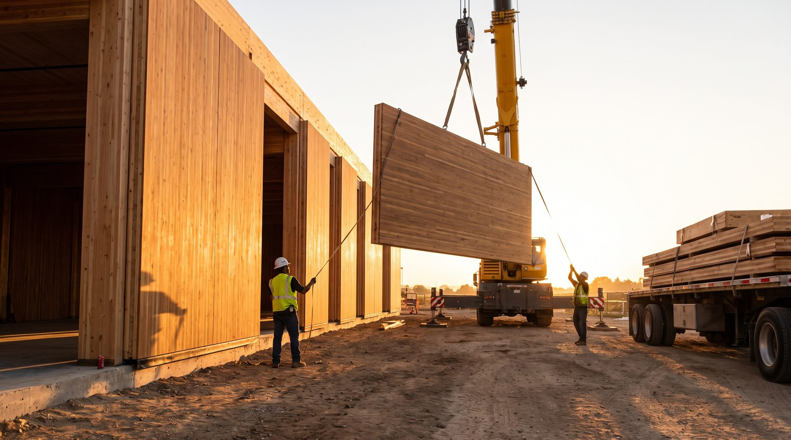
Schedule figures are mass-timber case studies (ULI Urban Land: ~20% average across seven case studies, 12.7 vs 15.4 months; other studies 25–30%), used as an analogy for a material that builds the same way. No SUPERWOOD schedule data yet.
Every item below ships today as boards up to 8" × 16' × 3/8", exterior or interior grade. SuperMill One makes about one million square feet a year across all markets.
Immediate shipping from SuperMill One · Soon 1–3 years; straightforward applications engineering · Medium term complex applications engineering such as full building systems, new form factors, or materials engineering · Long term 5+ years; technical potential with no design or code pathway yet
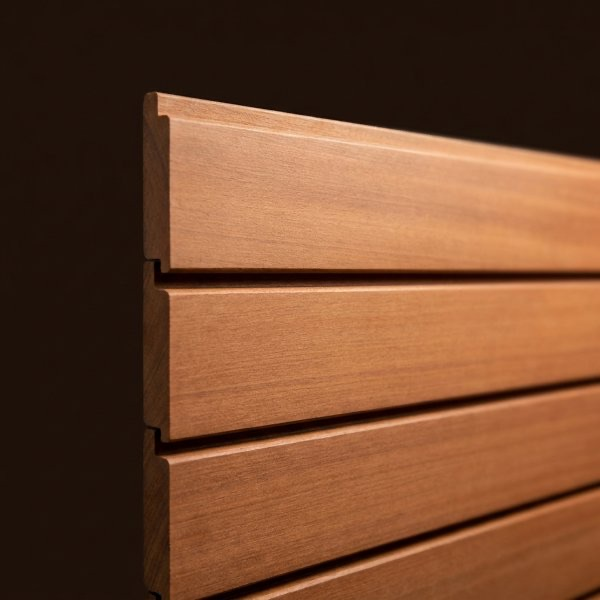
Facades, cladding & rain screens
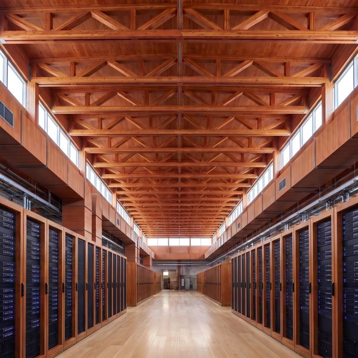
Biophilic interiors
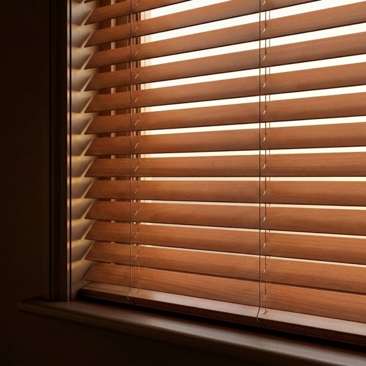
Louvers & equipment screening
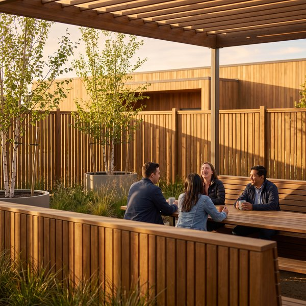
Fencing for staff outdoor spaces
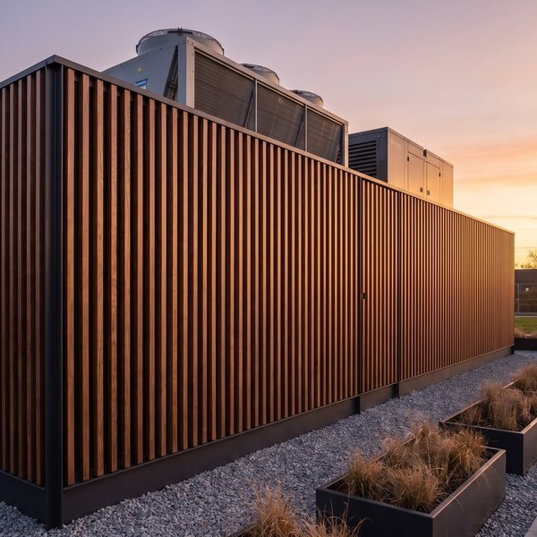
Security fencing around transformers & outdoor infrastructure
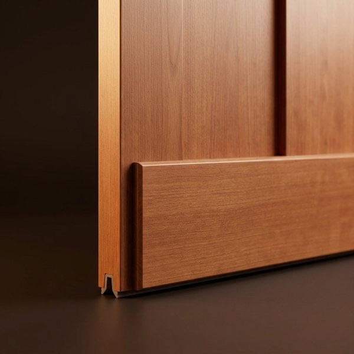
Trim, door kicks & sub-framing
Concept renderings
Why these first. They need no assembly fire rating — where a finish rating applies, Class A has been demonstrated and is specified per order. They sit where the community and the workforce see the data center. And they are the near-term projects our hyperscaler customers asked for: facades, biophilic office interiors, staff-area fencing, security fencing around critical outdoor infrastructure.
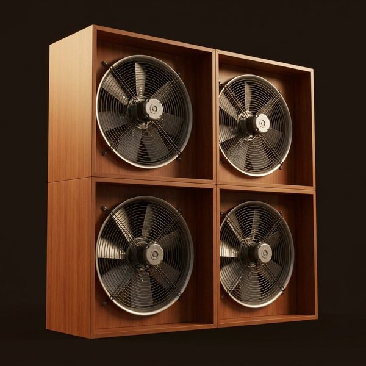
Fan enclosures & ducting
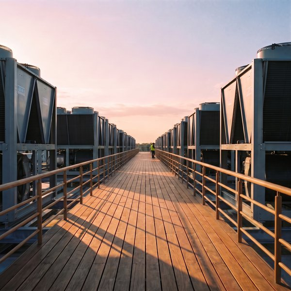
Walkways & platforms
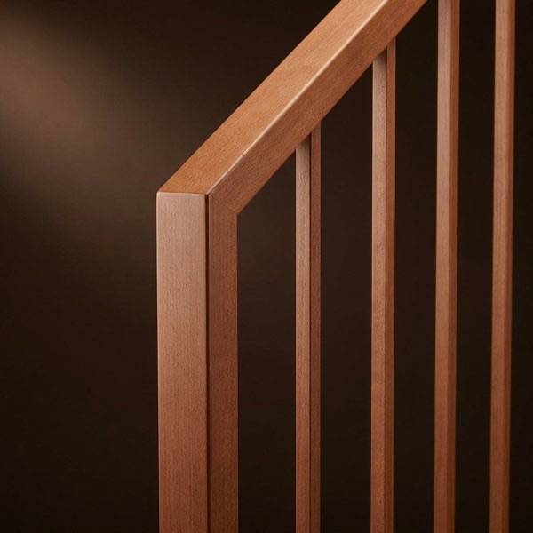
Railings
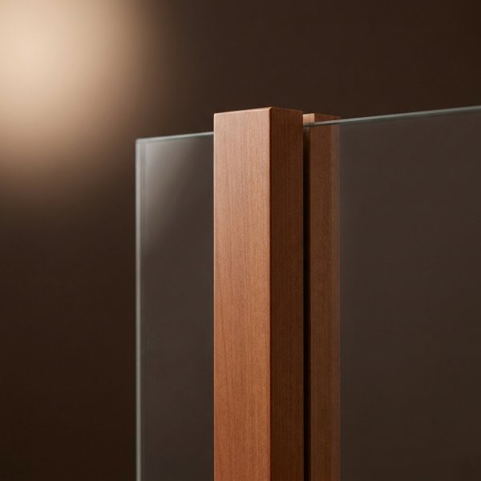
Window mullions
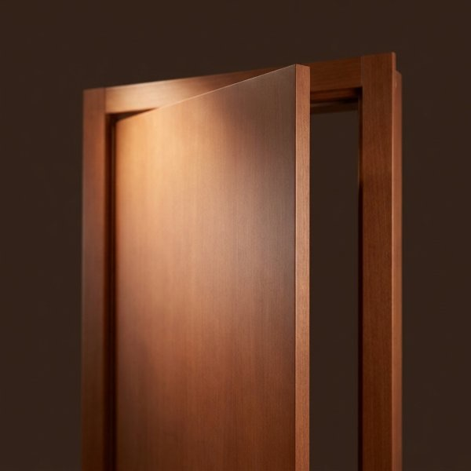
Interior doors & door protection
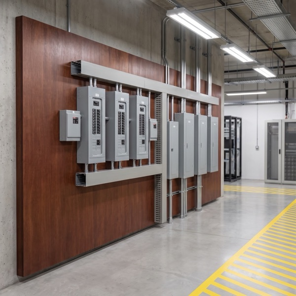
Equipment backplanes
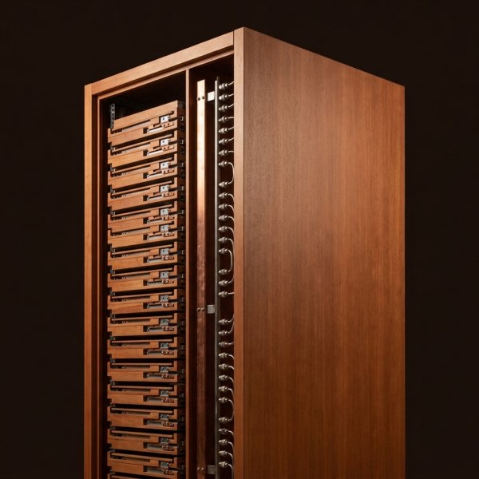
Racks & equipment supports
Concept renderings
Each needs one scoped test program, which can be co-funded with a customer. Order depends on which a customer picks up first.
Truss design is starting. Mass-timber enhancement — SUPERWOOD laminations that stiffen and strengthen glulam and CLT-type members — is under way. Light structural components (non-life-safety): strut-type supports, window mullions, deck boards.
We expect structural sales on the way to SuperMill Two. Replacing structural steel is the first thing new data-center customers ask about.
Slender, stiff curtain-wall and storefront mullions in place of aluminum and steel — light structural, non-life-safety
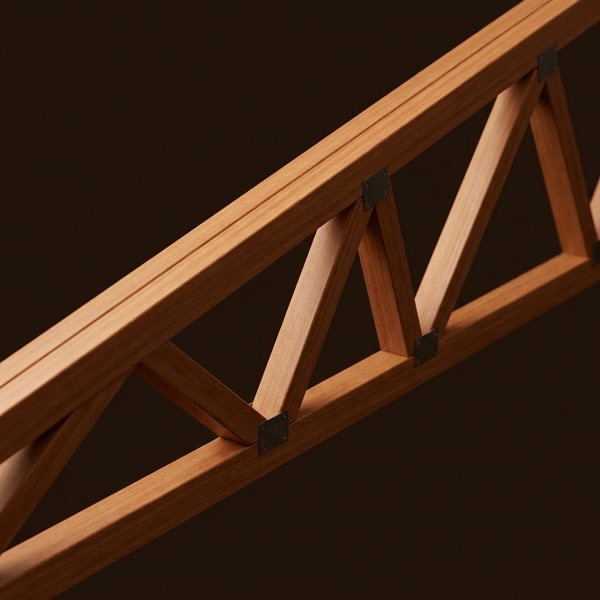
Roof structure first; long-span floors and canopies follow
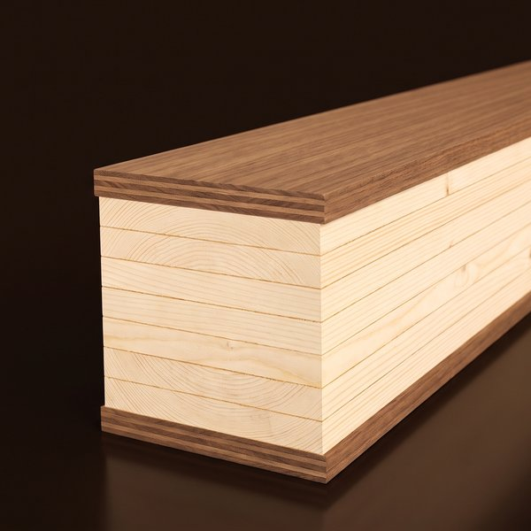
Starting with SUPERWOOD hybrid glulam: SUPERWOOD outer laminations on a glulam core. Thin, far stronger panels follow through the mass-timber product route
Racks come soon, a few months of development; enclosures for servers and equipment follow; the electronics are never replaced
Concept renderings
How qualification works. Every structural application is qualified through a scoped test program with the customer who picks it up first, on the pathway mass timber has already opened in the building codes, with insurer acceptance for structural use. Test methods and property data are available on request.
Structure and skin shipped as panels and modules — the co-development target with our hyperscaler customers' architects and engineers. Shells that carry their own loads, weigh far less than steel and precast, and can be disassembled and moved.
Hyperscalers are asking for this now, to simplify design and delivery and accelerate schedules.
Lightweight, insulated SUPERWOOD foundations and slabs in place of concrete — installed faster, with lower geotechnical demands, and potentially movable.
Biggest unaddressed impact both to speed of development and construction, and with huge carbon impact. Geotechnical requirements greatly impact schedule and site selection.
Stated technical potential, not an engineered plan: slab, paving and foundations are on the order of 1–2 million tons of concrete and rebar per gigawatt. No design or code pathway exists yet.
Facades, biophilic interiors, staff and security fencing under discussion; roof-truss and enclosure work with their architecture and engineering firms; interest in SUPERWOOD in the basis of design
Engaged for over a year across the data-center ecosystem; facade applications and backplanes under way; structural applications and racking to follow
Engagement just begun; initial focus on replacement of structural steel
Data center equipment builder exploring SUPERWOOD components
Operators focused on security fencing around outdoor infrastructure
Next steps undated. Published backup for Microsoft and Meta on the next slide.
Two Northern Virginia datacenters built with cross-laminated timber floor panels on a steel frame — an estimated 35% embodied-carbon reduction vs. conventional steel construction and 65% vs. precast concrete. Design by Gensler; structural engineering by Thornton Tomasetti.
Microsoft Source, Nov 2024; Thornton Tomasetti project pageIncorporating SUPERWOOD into the basis of design for future data centers
Roof trusses, leading to roofs and fast-to-build enclosures — with their principal architecture and engineering firms
Building facades · biophilic interiors · staff-area fencing · security fencing around transformers
Piloting mass timber for data center administrative buildings: first completed in 2025 at Aiken, South Carolina (DPR, SmartLam); projects under way in Cheyenne, Wyoming and Montgomery, Alabama — about a 41% reduction in the embodied carbon of the materials substituted.
Meta Sustainability, 31 Jul 2025Across every part of the data-center ecosystem, for more than a year
Facade applications and equipment backplanes
Structural applications and racking over time
Sources: news.microsoft.com, Nov 2024; thorntontomasetti.com; sustainability.atmeta.com, 31 Jul 2025.
A gigawatt data center is millions of square feet of skins and screens and tens of thousands of tons of structure — and hyperscalers build one data center after another to one design.
Warm, quiet, biophilic exteriors and interiors that ease community and planning approval.
Built from a material that stores about 1.3 kg CO₂e of biogenic carbon per kg and displaces the steel that carries most of the building materials' embodied carbon.
Whether a building nets out as a store of carbon depends on the LCA (under way with Prof. Ming Hu, University of Notre Dame), on what steel and concrete SUPERWOOD displaces, and on end-of-life accounting. The next slide gives the numbers and their basis.
Biogenic carbon, reported separately. SUPERWOOD stores 0.5–1.5 kg CO₂e per kg of SUPERWOOD as biogenic carbon, 0.1–0.5 kg per kg of steel it substitutes. Under EN 15804 it is released again in the end-of-life module, so it nets to zero over the life cycle; the lasting advantage is lower manufacturing emissions.
SUPERWOOD needed: 0.25–0.33 tons per ton of steel replaced — a 3:1 to 4:1 average replacement by weight, to be engineering-stamped per element.
SUPERWOOD manufacturing emissions: 0.25–0.33 tons × 0.5 = about 0.1–0.2 tons CO₂e per ton of steel substituted.
Against average steel (1.8 tons CO₂e): a reduction of 89–94%.
Against recycled steel (0.4–0.7 tons CO₂e): a reduction of 50–86%.
Carbon stored in the SUPERWOOD: 0.25–0.33 tons × 0.5–1.5 = 0.1–0.5 tons CO₂e per ton of steel replaced, biogenic, reported separately.
Any stated reduction must name its steel baseline and its substitution factor. Both are shown here; neither is yet verified.
Pre-LCA projection for a full-scale plant. LCA under way with Prof. Ming Hu, University of Notre Dame.
SUPERWOOD 0.5 kg CO₂e/kg manufactured and 0.5–1.5 kg/kg biogenic storage: company projections, pre-LCA. Steel 1.8 kg/kg: global BF-BOF average. EAF 0.4–0.7 kg/kg: typical published range for recycled-scrap steel. Replacement 3:1 to 4:1 by weight (0.25–0.33 kg SUPERWOOD per kg steel): company assumption. Reductions are arithmetic on these inputs.
| Risk | How we handle it |
|---|---|
| Insurers and code officials must accept SUPERWOOD for structural use | Start with skins and non-structural items that need no assembly rating. Qualify structural applications with the first customer, on the pathway mass timber opened. |
| Qualification could run longer than customer design cycles | Sell what needs no qualification now. Hyperscalers design data centers years ahead, so basis-of-design work starts before qualification ends. |
| One plant, shared across every market | SuperMill One's output is allocated across every market; a gigawatt's skins alone are one to three plant-years. SuperMill Two resolves it; that is what the raise funds. |
| Price against metal panel, fiber cement, CLT and recycled steel | Premium skins where appearance and community acceptance carry value. Structural competitiveness arrives with SuperMill Two cost (roadmap basis, not yet realized). |
| Carbon figures are projections until the LCA is complete | Labeled pre-LCA everywhere; LCA under way with Prof. Ming Hu, University of Notre Dame. No carbon claim without its baseline and substitution factor. |
| Customer concentration | Three hyperscalers plus Vertiv, Wooden Data Center and operators — and what is qualified for a data center is qualified for the wider structural market. |
No probabilities are assigned. These are the conditions the data-center case depends on.
Facades, interiors, louvers, staff-area or security fencing — installed from SuperMill One output with a willing customer. Produces an installed reference and installed-cost data.
Toward whatever the chosen application needs, co-funded. Produces the data package the next application inherits.
Structural enclosure and truss solutions that can be written into the standard data center design. Produces a specification that repeats.
A baseline bill-of-materials comparison and verification plan. Produces defensible numbers as the LCA completes.
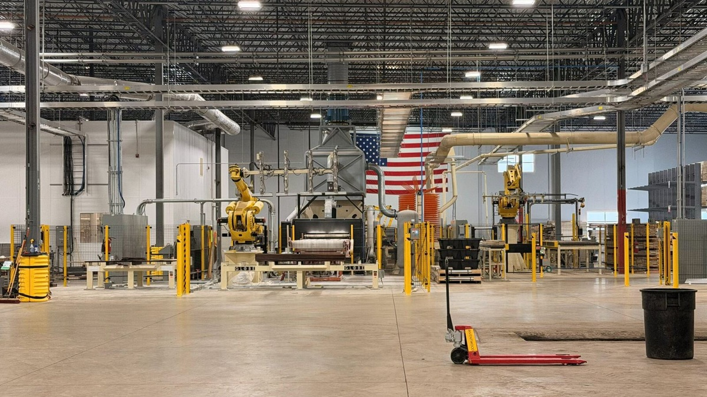
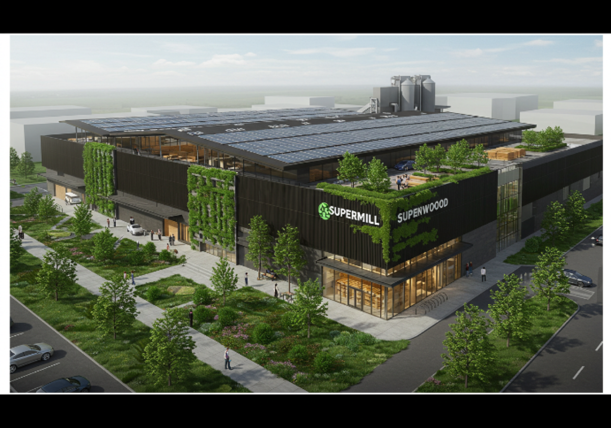
Steps are sequenced, not dated. Each names what it produces.
Company, mills, cost roadmap and the raise: SUPERMILLS Investor Overview
Alex Lau · CEO / Co-Founder · alex@inventwood.com
Lex Harris · Director, Capital Markets & IR · lex@inventwood.com